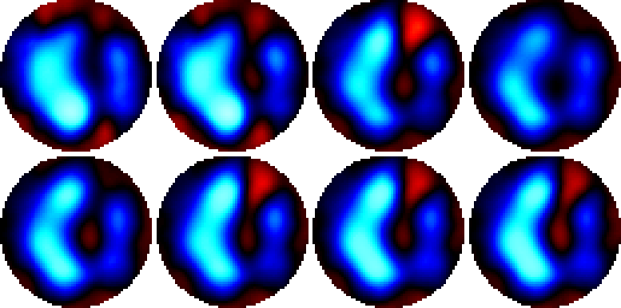
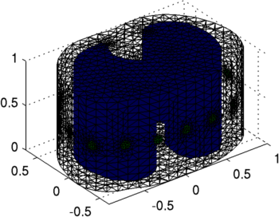
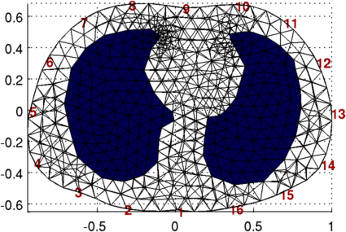
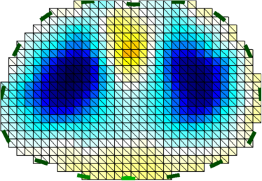

GREIT Reconstruction for an neonate human thorax geometry
Data
Data are available
Here.
Data were recorded from a
10-day old spontaneously breathing neonate lying in the
prone position with the head turned to the left, as
documented in:
S. Heinrich, H. Schiffmann, A. Frerichs, A. Klockgether-Radke, I. Frerichs,
Body and head position effects on regional lung ventilation in infants: an electrical impedance tomography study.
Intensive Care Med., 32:1392-1398, 2006.
Subject Image:
Use Circular GREIT v1.0 model
Reconstruction model
Reconstruct images
Reconstruct temporal signals


Figure:
(top) Images of three different breaths (end inspiration),
(bottom) time course
Use Circular GREIT v1.0 model


Figure:
Forward model used for training GREIT using
contrasting lung regions
Training GREIT
Show some images
Data used are of tidal breathing of the author using the EIT equipment

Figure:
Forward model used for training GREIT using
contrasting lung regions
Last Modified: $Date$ by $Author$
{kind=link}